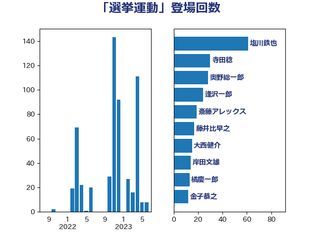

単語「選挙運動」

| 塩川鉄也 | 日本共産党 | 61 回 |
| 寺田稔 | 自由民主党 | 30 回 |
| 奥野総一郎 | 立憲民主党 | 28 回 |
| 逢沢一郎 | 自由民主党 | 24 回 |
| 斎藤アレックス | 国民民主党 | 19 回 |
| 藤井比早之 | 自由民主党 | 17 回 |
| 大西健介 | 立憲民主党 | 15 回 |
| 岸田文雄 | 自由民主党 | 14 回 |
| 橘慶一郎 | 自由民主党 | 13 回 |
| 金子恭之 | 自由民主党 | 12 回 |
| 秋葉賢也 | 自由民主党 | 11 回 |
| 松本剛明 | 自由民主党 | 11 回 |
| 寺田学 | 立憲民主党 | 11 回 |
| 岡本あき子 | 立憲民主党 | 10 回 |
| 手塚仁雄 | 立憲民主党 | 9 回 |
| 後藤祐一 | 立憲民主党 | 9 回 |
| 鳩山二郎 | 自由民主党 | 8 回 |
| 近藤和也 | 立憲民主党 | 7 回 |
| 平口洋 | 自由民主党 | 7 回 |
| 山本剛正 | 日本維新の会 | 7 回 |
| 井上哲士 | 日本共産党 | 7 回 |
| 遠藤良太 | 日本維新の会 | 6 回 |
| 階猛 | 立憲民主党 | 5 回 |
| 浦野靖人 | 日本維新の会 | 5 回 |
| 宮本岳志 | 日本共産党 | 5 回 |
| 中川貴元 | 自由民主党 | 5 回 |
| 門山宏哲 | 自由民主党 | 4 回 |
| 船田元 | 自由民主党 | 4 回 |
| 神谷裕 | 立憲民主党 | 4 回 |
| 田畑裕明 | 自由民主党 | 4 回 |
| 岩谷良平 | 日本維新の会 | 4 回 |
| 牧山ひろえ | 立憲民主党 | 3 回 |
| 山岸一生 | 立憲民主党 | 3 回 |
| 山下貴司 | 自由民主党 | 3 回 |
| 尾身朝子 | 自由民主党 | 3 回 |
| 小西洋之 | 立憲民主党 | 3 回 |
| 三木圭恵 | 日本維新の会 | 3 回 |
| 輿水恵一 | 公明党 | 2 回 |
| 西田昭二 | 自由民主党 | 2 回 |
| 緒方林太郎 | 無所属 | 2 回 |
| 玉木雄一郎 | 国民民主党 | 2 回 |
| 源馬謙太郎 | 立憲民主党 | 2 回 |
| 泉健太 | 立憲民主党 | 2 回 |
| 杉田水脈 | 自由民主党 | 2 回 |
| 山本太郎 | れいわ新選組 | 2 回 |
| 宮口治子 | 立憲民主党 | 2 回 |
| 吉田宣弘 | 公明党 | 2 回 |
| 古川俊治 | 自由民主党 | 2 回 |
| 中谷一馬 | 立憲民主党 | 2 回 |
| 鰐淵洋子 | 公明党 | 1 回 |
| 高木真理 | 立憲民主党 | 1 回 |
| 鎌田さゆり | 立憲民主党 | 1 回 |
| 鈴木憲和 | 自由民主党 | 1 回 |
| 野田国義 | 立憲民主党 | 1 回 |
| 逢坂誠二 | 立憲民主党 | 1 回 |
| 谷田川元 | 立憲民主党 | 1 回 |
| 落合貴之 | 立憲民主党 | 1 回 |
| 芳賀道也 | 国民民主党 | 1 回 |
| 秋本真利 | 無所属 | 1 回 |
| 渡辺周 | 立憲民主党 | 1 回 |
| 渡辺創 | 立憲民主党 | 1 回 |
| 浜田聡 | NHK党 | 1 回 |
| 松本洋平 | 自由民主党 | 1 回 |
| 杉尾秀哉 | 立憲民主党 | 1 回 |
| 本庄知史 | 立憲民主党 | 1 回 |
| 早坂敦 | 日本維新の会 | 1 回 |
| 岩屋毅 | 自由民主党 | 1 回 |
| 小池晃 | 日本共産党 | 1 回 |
| 國重徹 | 公明党 | 1 回 |
| 吉田はるみ | 立憲民主党 | 1 回 |
| 古賀之士 | 立憲民主党 | 1 回 |
| 加藤竜祥 | 自由民主党 | 1 回 |
| 冨樫博之 | 自由民主党 | 1 回 |
| 伊藤孝江 | 公明党 | 1 回 |
| 伊藤孝恵 | 国民民主党 | 1 回 |
| 井野俊郎 | 自由民主党 | 1 回 |
| 上川陽子 | 自由民主党 | 1 回 |
| あかま二郎 | 自由民主党 | 1 回 |